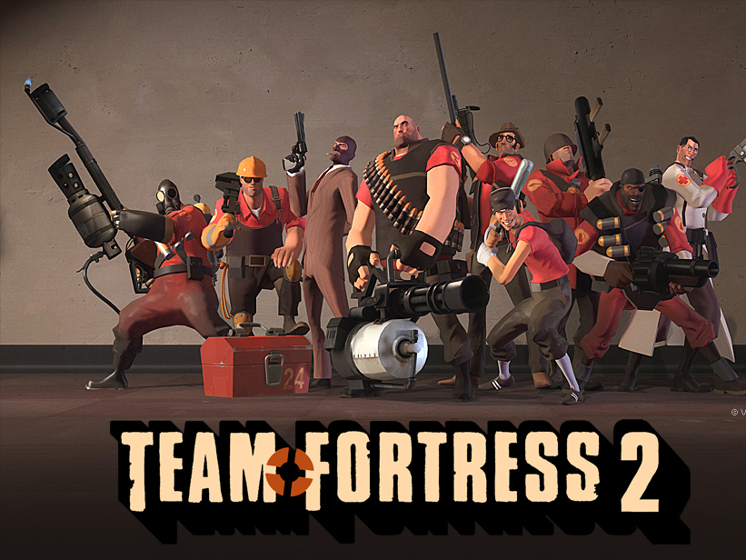
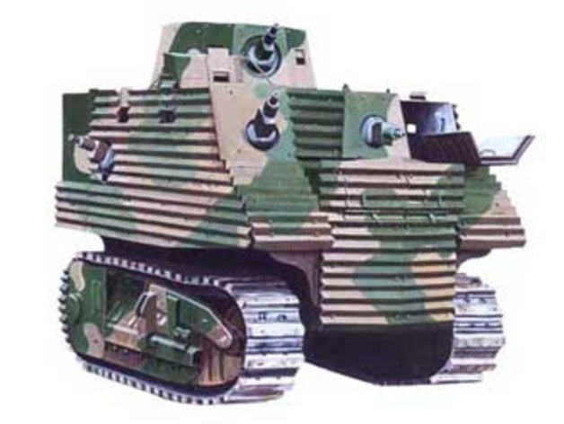

My favorite game

Command & Conquer: Generals is a real-time strategy video game and the seventh installment in the Command & Conquer series.
It was released for Microsoft Windows and Mac OS operating systems in 2003 and 2004.
While the Windows version of Generals was developed by EA Pacific and published by EA Games, the Mac OS X version was developed and published by Aspyr Media.
The Mac OS X version was re-released by Aspyr for the Mac App Store on March 12, 2015.
In the game, the player can choose from three different factions: the United States, China and the Global Liberation Army (GLA).
my favorite FPS
Team Fortress 2 (TF2) is a multiplayer first-person shooter game developed and published by Valve Corporation.
It is the sequel to the 1996 mod Team Fortress for Quake and its 1999 remake, Team Fortress Classic.
It was released as part of the video game bundle The Orange Box in October 2007 for Microsoft Windows and the Xbox 360.
A PlayStation 3 version followed in December 2007. The game was released for Windows in April 2008 and was updated to support OS X in June 2010 and Linux in February 2013.
It is distributed online through Valve's digital retailer Steam, with retail distribution by Electronic Arts.
Players join one of two teams comprising nine character classes, battling in a variety of game modes including capture the flag and king of the hill.
Development is led by John Cook and Robin Walker, creators of the original Team Fortress. Announced in 1998, the game once had more realistic, militaristic visuals and gameplay,
but this changed over the protracted nine-year development. After Valve released no information for six years,
Team Fortress 2 regularly featured in Wired News' annual vaporware list among other ignominies.
The finished Team Fortress 2 has cartoon-like visuals influenced by the art of J. C. Leyendecker, Dean Cornwell, and Norman Rockwell, and uses Valve's Source game engine.
My favorite Tank
the Bob Semple tank was a tank designed by New Zealand Minister of Works Bob Semple during World War II.
Originating out of the need to build military hardware from available materials, the tank was built from corrugated iron on a tractor base.
Designed and built during a period of uncertainty in which New Zealand feared having to defend itself from Japanese invasion without external assistance,
these tanks were a civilian effort to design and create a means to protect New Zealand.
My Favorite food